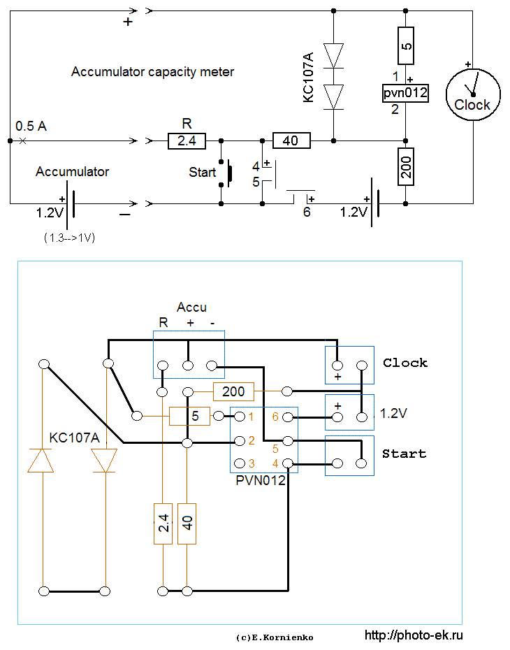
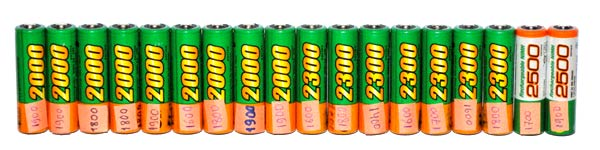

Измеритель ёмкости аккумулятора
Разводка платы
Используется немного упрощённая схема Измерителя ёмкости аккмулятора. Если нужно проверять только аккумуляторы AA, то можно сделать ещё некоторые упрощения (убрать диоды и резистор 5 ом), и использовать корпус от зарядника АА с хорошими контактами чтобы уменьшить потери напряжения на контактах.

Описание работы схемы см. на странице
"Измерение ёмкости аккумулятора"


Проверка идёт долго: 2000ма-час/500ма = 4 часа. Сначала я наклеивал этикетку с ёмкостью на аккумулятор. Но оказалось удобнее писать на аккумуляторе номер, и вести список, в котором для каждого номера указана дата, ёмкость и внутреннее сопротивление.
Почему портятся аккумуляторы
У меня несколько десятков аккумуляторов GP AA и AAA. Они прошли уже больше сотни циклов разряда, и достаточно хорошо держатся. Раз в год я измеряю их ёмкость. 2-3 элемента не проходят тест, то есть имеют ёмкость вдвое ниже номинала или внутреннее сопротивление более 0.5 ом.
Кроме естественного износа (старения), причина выхода аккумуляторов из строя - неправильная эксплуатация:
Слишком сильный разряд
из-за того, что аккумуляторы оставались в невыключенном устройстве.
Перегрев
(перезаряд) из-за большого тока заряда или неотключения тока после окончания заряда при использовании неудачного зарядного устройства. У меня довольно часто не отключается зарядник Ansmann. Для страховки можно включить зарядник через реле времени, или уменьшить ток заряда и ставить будильник. Но надёжнее использовать хороший зарядник.
Последовательное включение аккумуляторов разной ёмкости
В моём приёмнике Grundig включены последовательно 6 аккумуляторов. Если, например, один из них недозаряжен, то через некоторое время напряжение на нём снизится до нуля или станет отрицательным. При этом общее напряжение будет 5 × 1.2 = 6 вольт. Приёмник будет ещё работать, и вы не заметите "потери бойца".
Глубокий саморазряд
Иногда аккумуляторы долго лежат без использования или вставлены в устройство, которое выключено, и долго не используется. У меня такого не было, но это, кажется, самая обычная причина выхода из строя. Чтобы не испортить запасные аккумуляторы их нужно заряжать раз в несколько месяцев (Ni-Cd и Hi-Mh), или раз в год (Li-Ion).
Сейчас я постепенно заменяю свои много прослужившие аккумуляторы GP (некоторым уже 10 лет, и у них увеличилось внутреннее сопротивление ) на аккумуляторы Sanyo eneloop которые имеют маленький саморазряд.
После несколько лет использования своего измерителя ёмкости
я пришёл к выводу, что качество аккумулятора больше определяется
внутренним сопротивлением, а не ёмкостью. При достаточно малом
внутреннем сопротивлении аккумулятор обеспечит нужный ток хоть
какое-то время, а при большом сопротивлении не даст нужного тока,
даже имея большую ёмкость. Внутреннее сопротивление хорошо ещё
тем, что его можно быстро измерить. Теперь, когда я покупаю аккумулятор
для машины или для охранного устройства на
даче,
я расставляю приоритеты
так
1 ) низкое
внутреннее сопротивление
2 ) большой срок службы
3 ) большая
ёмкость